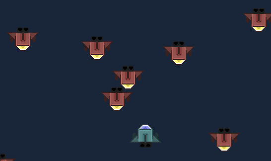

It's time to add destroyable enemies to our game.
Each enemy is an entity with a random speed and spawn position, moving downwards until they are shot down or until they exit the screen.
The whole enemy spawn handling is not a part of the PlayerShip logic, so the code will go in the MainScene.hx class.
We'll need to handle random spawning, movement, and collision with the player's bullets.
Let's first go to the Bullet.hx class and add a few things which will help us implement collision detection.
In HaxePunk, collidable Entities need to have a hitbox. This is a simple rectangle which determines the collidable area of this Entity.
We can also give all our Bullets a common type "bullet", so that we can check collision of enemy ships with all bullets.
Here's the full Bullet.hx code:
package ;
import com.haxepunk.Entity;
/**
* Bullet entity.s
* @author Kirill Poletaev
*/
class Bullet extends Entity
{
public function new(g:Dynamic)
{
super();
graphic = g;
type = "bullet";
setHitbox(14, 24, 0, 0);
}
override public function update() {
this.y -= 12;
if (this.y < -50) {
scene.remove(this);
}
}
}The next step is to add the enemy spawning logic to the MainScene.hx class.
Full code:
import com.haxepunk.graphics.atlas.TextureAtlas;
import com.haxepunk.graphics.Image;
import com.haxepunk.HXP;
import com.haxepunk.Scene;
import com.haxepunk.utils.Input;
import com.haxepunk.utils.Key;
class MainScene extends Scene
{
private var player:PlayerShip;
private var spawnInterval:Int;
private var enemyGraphic:Image;
public function new()
{
super();
Input.define("up", [Key.UP, Key.W]);
Input.define("down", [Key.DOWN, Key.S]);
Input.define("left", [Key.LEFT, Key.A]);
Input.define("right", [Key.RIGHT, Key.D]);
var atlas:TextureAtlas = TextureAtlas.loadTexturePacker("atlas/atlas.xml");
enemyGraphic = new Image(atlas.getRegion("enemyShip"));
player = new PlayerShip(atlas);
add(player);
spawnInterval = Math.round(Math.random() * 50)+50;
}
override public function update() {
super.update();
spawnInterval--;
if (spawnInterval == 0) {
var enemy = new EnemyShip(enemyGraphic);
add(enemy);
enemy.x = Math.round(Math.random() * (HXP.width-64));
enemy.y = -50;
spawnInterval = Math.round(Math.random() * 20)+30;
}
}
}As you can see, we added 2 variables - one for storing graphical data for all enemy ships, one for handling the delay between enemy spawns. Every few frames we create a new EnemyShip entity, and here is its code:
package ;
import com.haxepunk.Entity;
import com.haxepunk.HXP;
/**
* Enemy ship entity.
* @author Kirill Poletaev
*/
class EnemyShip extends Entity
{
private var speed:Int;
public function new(g:Dynamic)
{
super();
graphic = g;
speed = Math.ceil(Math.random() * 3);
setHitbox(64, 48, 0, 0);
}
override public function update() {
this.y += speed;
if (this.y > HXP.height) {
scene.remove(this);
}
var collidedEntity = collide("bullet", x, y);
if (collidedEntity != null) {
scene.remove(this);
scene.remove(collidedEntity);
}
}
}As you can see, it's an Entity subclass which receives a graphic value in the constructor as the only parameter, generates a random speed value, and moves downwards every frame.
It is important to set the hitbox value for this entity, since we are going to check for collisions in the update() method.
If the Entity goes off screen, remove it. If it collides with any Entity with the type "bullet", remove this ship and that bullet.
If you test your game now, you'll be able to shoot down the incoming enemy spaceship fleet.
There are still a lot of things missing from our game, such as healthbars, score, particles and sounds.
We'll add enemy health and explosion particles in the next tutorial!